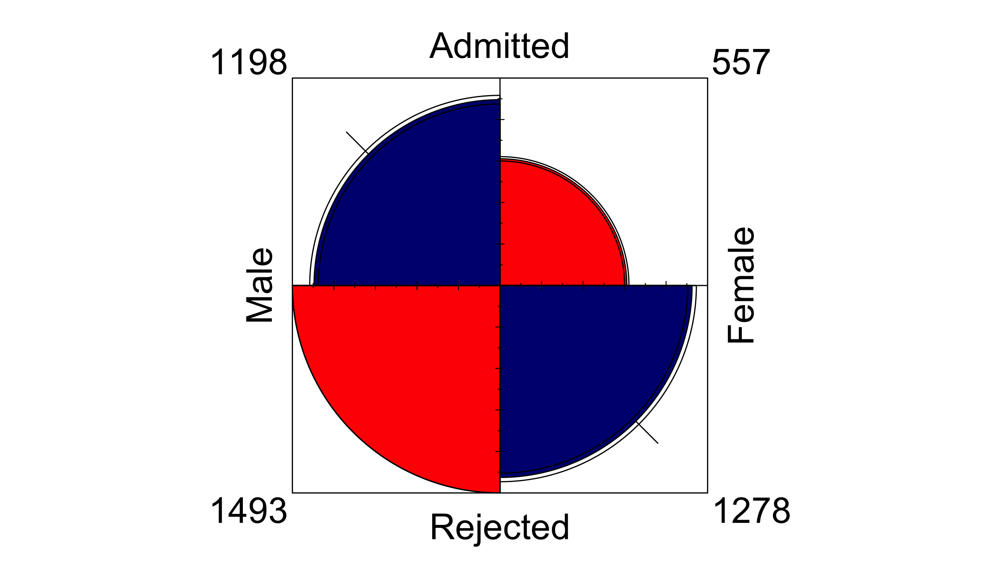
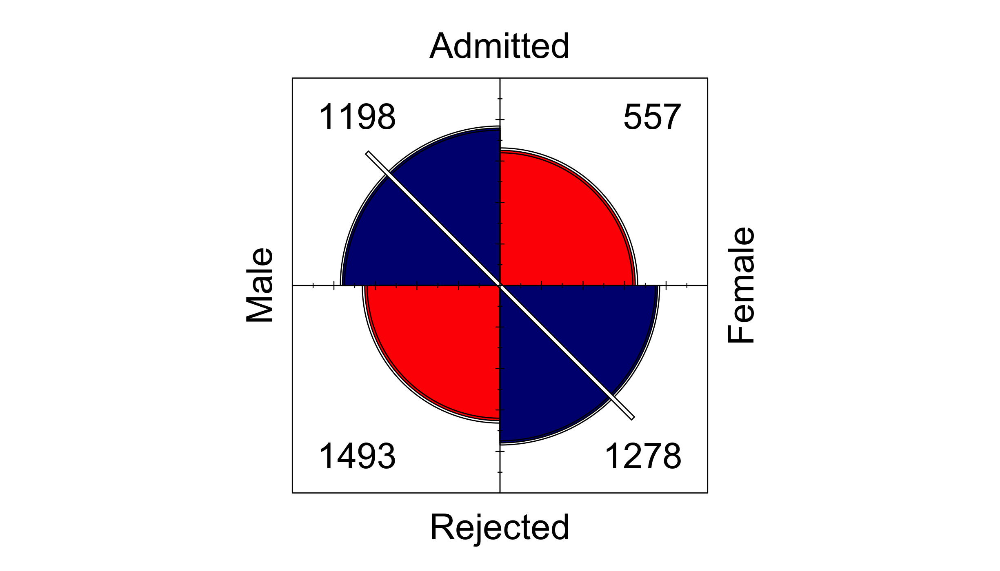
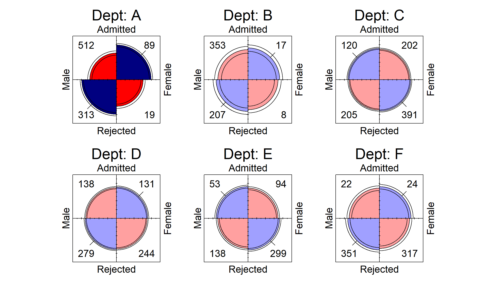
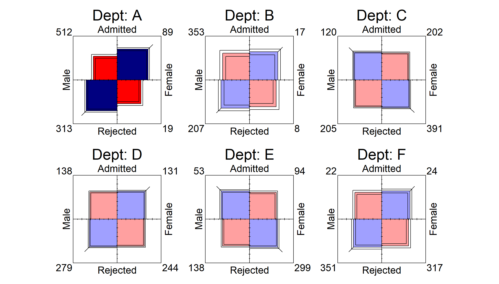

A ggplot2 extension that provides a geom and theme for creating fourfold displays. Inspired by the fourfold SAS macro (Friendly, 2000) and vcd R package (Meyer et al., 2026).
Installation
The current development version (0.1.0) of ggfourfold can be installed from R-universe or directly from the GitHub repository with:
# == R-universe ==
install.packages("ggfourfold", repos = "https://gklorfine.r-universe.dev")
# == GitHub ==
#install.packages("pak")
pak::pak("gklorfine/ggfourfold")Overview
A fourfold display (Friendly, 1994; Friendly & Meyer, 2016, Section 4.4) is a visualization of a \(2 \times 2\) table, or \(2 \times 2 \times k\) tables via faceting. It consists of a circle that is split into quadrants, giving a segment for each cell in the table. Unlike a pie chart, the angles of the segments are fixed, and it is the radii that vary.
In an unstandardized display, these quadrants have area proportional to the sample size of their corresponding cell. Standardized displays rescale the table so that the row and/or column totals are equal, while preserving the sample odds ratio. This helps with comparing the quadrants when one group is much larger than another. A fully standardized display (the default) equates both the row and column totals, and gives a visual interpretation of the sample odds ratio:
\[\hat{\theta} = \frac{n_{11} / n_{12}}{n_{21} / n_{22}} = \frac{n_{11} \, n_{22}}{n_{12} \, n_{21}} .\]
In a fully standardized display, the quadrants form a circle if \(\hat{\theta} = 1\). Otherwise, one diagonal pair of quadrants is larger than the other, with this discrepancy reflecting the strength of association between variables. The diagonal with more cases than expected under independence is drawn in blue, with the other pair being drawn in red. Intense shading is applied when \(\hat{\theta}\) differs significantly from 1, after adjusting for multiple testing across panels. Confidence rings are also drawn, with the rings of adjacent quadrants overlapping iff the 95% confidence interval for \(\theta\) includes 1.
For more detail on fourfold displays and their use in this package, see the introductory vignette.
Examples
The below examples use the UCBAdmissions data (Bickel et al., 1975), which contains applicants to the six largest graduate departments at UC Berkeley in 1973, classified by admission and gender. They examine the association between gender (Gender) and admission (Admit), both overall and within each department (Dept).
To construct a fourfold display with ggfourfold, you add geom_fourfold() and theme_fourfold() to a ggplot2::ggplot() call. Then use ggplot2::aes() to map the two binary variables to x and y. If the data are in frequency form, also supply a mapping for weight. For a review of the different forms of categorical data in R, and how to convert among them, see the vcdExtra (Friendly & Klorfine, 2026) vignettes 1. Creating and manipulating frequency tables and 1a. Steps Toward Tidy Categorical Data Analysis.
The below code constructs an unstandardized fourfold display from the UCBAdmissions data. These data are in table form, so the first step is to convert them into frequency form using as.data.frame(). Without faceting, geom_fourfold() sums the counts over the excluded variables, in this case, only Dept.
ucb <- as.data.frame(UCBAdmissions) # Table form -> frequency form
ggplot(ucb, aes(x = Gender, y = Admit, weight = Freq)) +
geom_fourfold(std = "ind.max") + # For unstandardized display
theme_fourfold()
Depicting raw counts, unstandardized displays are constructed by specifying std = "ind.max" in geom_fourfold(). Quadrant sizes mostly reflect that more men applied than women, and that most applicants were rejected, so the association is difficult to discern. The default, fully standardized display adjusts for these differences, making the association easier to see.
ggplot(ucb, aes(x = Gender, y = Admit, weight = Freq)) +
geom_fourfold() +
theme_fourfold()
This display depicts an association between Admit and Gender and appears to show a gender bias; that is, men are significantly more likely to be admitted than women, pooling over department. This is illustrated through the much larger area and intense blue shading of the male-admitted and female-rejected quadrants, along with the non-overlapping confidence rings of adjacent quadrants. The white diagonal line through the male-admitted and female-rejected quadrants marks the direction of association.
To see the relationship between Admit and Gender across Dept, add ggplot2::facet_wrap() or ggplot2::facet_grid() to draw one display per Dept. Panels are fully standardized individually, facilitating direct comparison.
ggplot(ucb, aes(x = Gender, y = Admit, weight = Freq)) +
geom_fourfold() +
facet_wrap(vars(Dept), labeller = label_both) +
theme_fourfold()
A different picture emerges after faceting by Dept; namely, there is no significant association between Admit and Gender in departments B through F, shown through pale shading. Further, there exists a significant association in department A, though it is in the reverse direction of the effect observed when Dept was pooled. This is a well-known example of Simpson’s paradox, arising because most women applied to departments with lower admission rates, lowering the overall female rate of admission.
Square displays
Four squares can be drawn instead of quarter-circles with shape = "square". Each square has the same area as the quarter-circle it replaces, so both shapes display a table with identical areas. The line through the center ends just past the outer corners of the two squares it marks. A square, confidence ring, or line that reaches the corners of the frame where the cell counts are drawn moves the counts of every panel just outside those corners; here they all stay inside.
ggplot(ucb, aes(x = Gender, y = Admit, weight = Freq)) +
geom_fourfold(shape = "square") +
facet_wrap(vars(Dept), labeller = label_both) +
theme_fourfold()